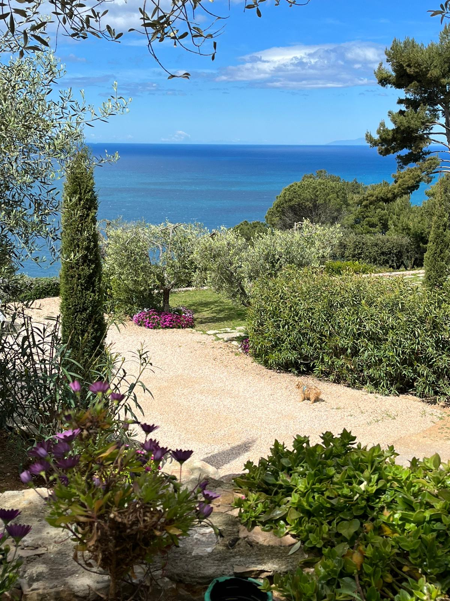

Position
Stella d'argento is located in Porto Santo Stefano, a tourist destination for the most beautiful beaches and coves with crystal clear sea, as well as for the port with ferries to the island of Giglio and the island of Giannutri but also for the yachts and private boats. There are also numerous dive centers and boat rentals. Porto S. Stefano is also renowned for its historic center with the Spanish fortress of 1636 and the Torre dell'Argentiera of 1442.

Rooms
The rooms are large and have a private bathroom with shower, some have a sea view, and a patio with comfortable armchairs to enjoy the magical atmosphere of the Tuscan archipelago. They are also equipped with Wi-Fi, air conditioning, hairdryer, TV, fridge and coffee machine. All benefit from a panoramic terrace overlooking the sea, ideal for breakfast and aperitifs.
Some rooms have a sea view and others a garden view, but all benefit from a splendid terrace overlooking the sea.

Services
The rooms are welcoming and offer air conditioning, free Wi-Fi, TV, fridge, toiletries, hairdryer, free covered parking space and breakfast included.
The B&B is immersed in a garden of olive trees and oleanders and is 5 km from the town centre, where there are many restaurants specializing in Tuscan cuisine and fresh fish.